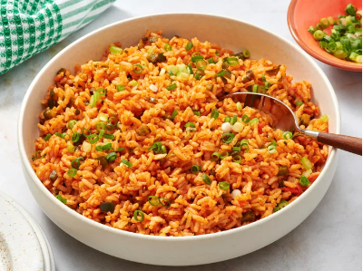

Spicy Spanish-Style Rice
Home

This Spanish rice-inspired spicy rice with tomatoes and fiery jalapeños is super easy to make and always a crowd-pleaser. When was the last time you had a flavorful rice side dish? You can substitute paprika for the chili powder.
- 1 tablespoon butter
- 2 cups uncooked long-grain white rice
- ⅓ cup diced jalapeño pepper
- ⅓ cup chopped green onion
- 1 clove garlic, crushed
- 1 teaspoon chili powder, or to taste
- 1 teaspoon ground cumin
- ½ teaspoon salt
- ½ teaspoon chipotle chile powder, or to taste
- ½ teaspoon cayenne pepper, or to taste (Optional)
- 2 ¼ cups chicken stock
- ½ cup tomato sauce
- chopped green onion for garnish